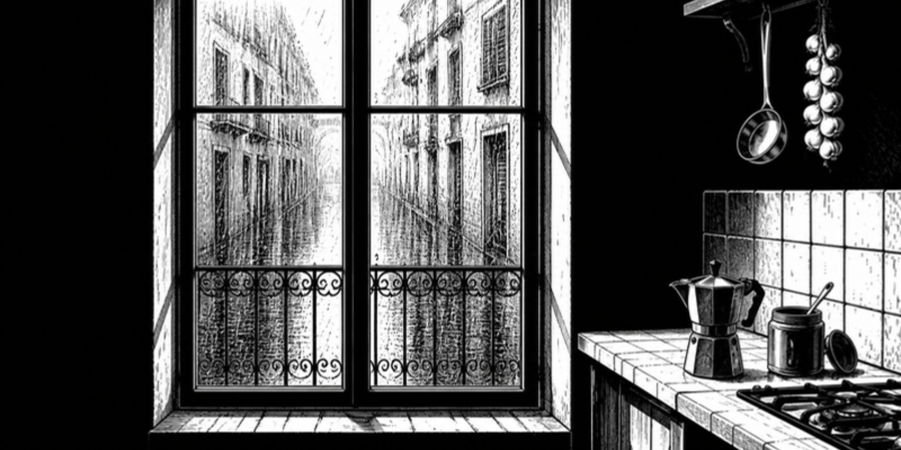
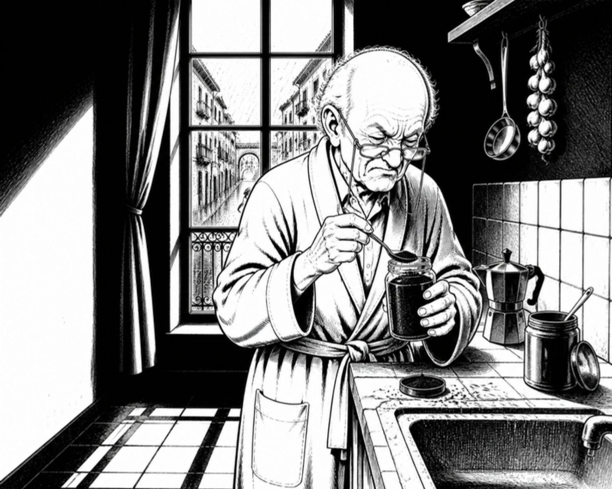
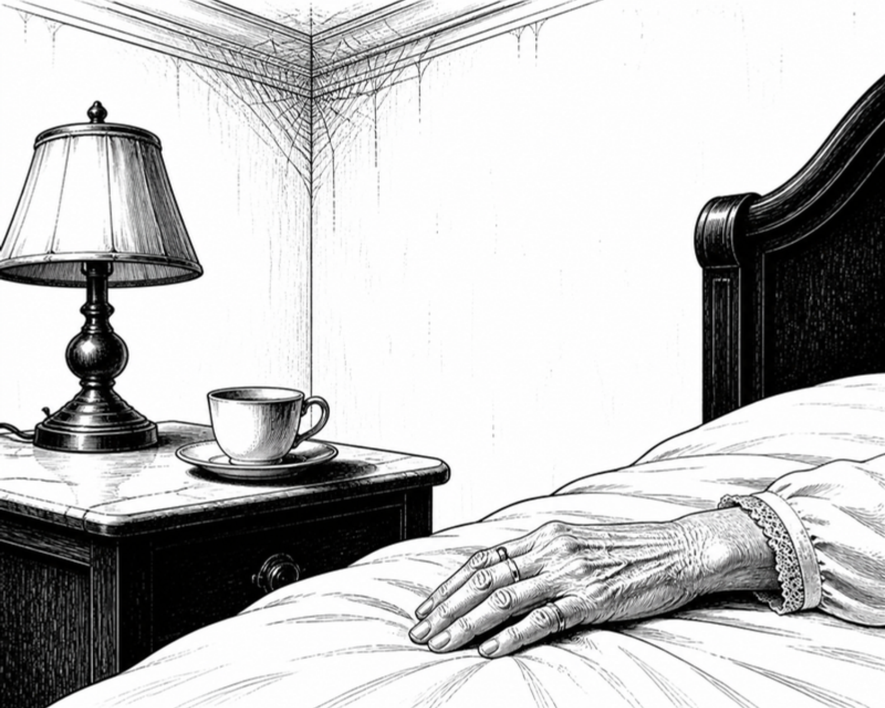
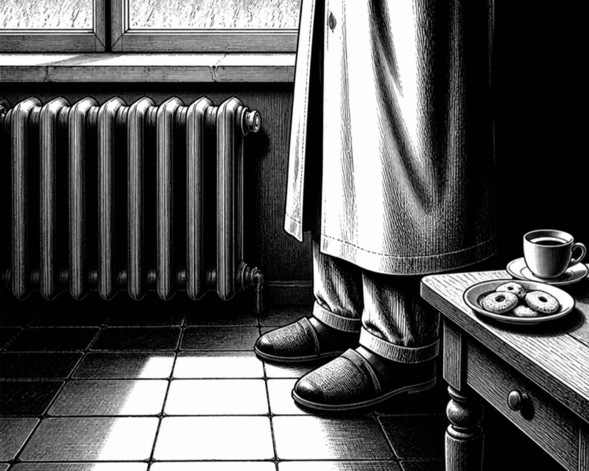
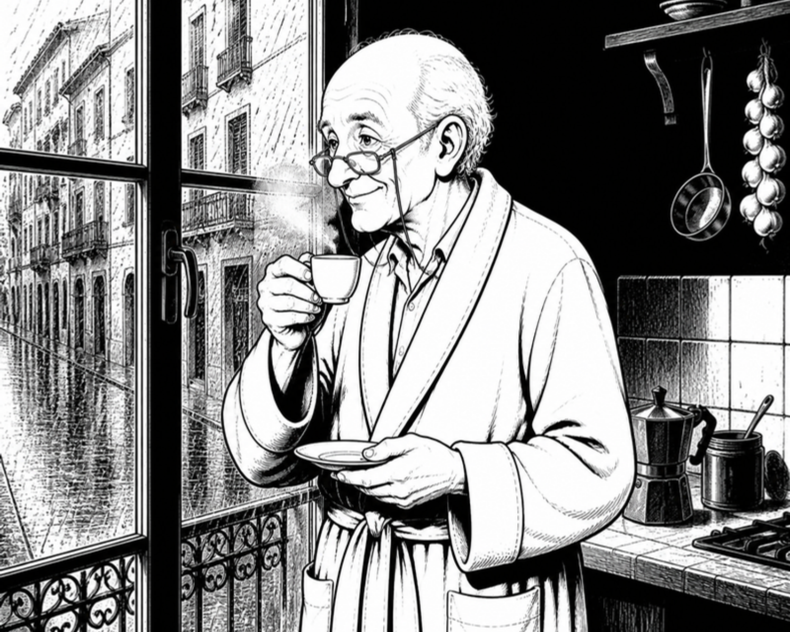

MALVERSI
Catastrofi · Il caffè puzza
1

Fossa Etrusca. Sabato 3 settembre 2022.
Sulle vetrate della cucina la pioggia batteva senza sosta.

Il professor Spiri, classe '52. Grecista in pensione, gloria del Liceo Leopardi.
Questo caffè puzza! Non si può bere!

Dalla camera da letto la signora Franca non replicava. Né annuiva.

La vestaglia, le babbucce, i biscottini all'anice: un inattaccabile bastione contro il potente accanirsi della bufera.

Il professore pensava la realtà per immagini epiche.
In fondo si è felici solo godendo di scampati pericoli.
dal romanzo Terapie di Armando Bisogno (De Tomi Editore)
adattamento e disegni realizzati con Claude